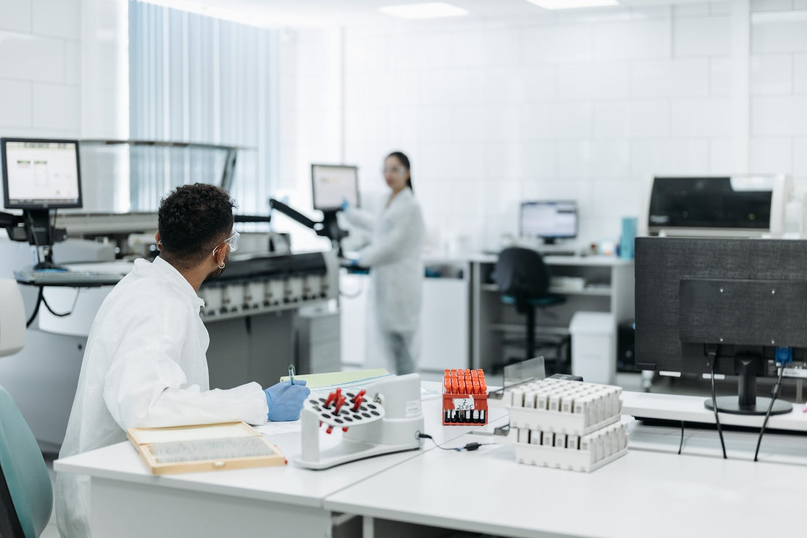
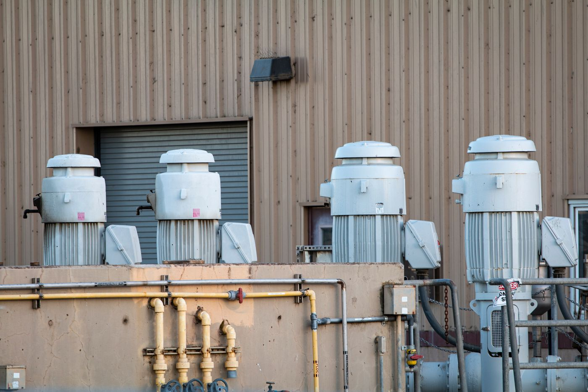
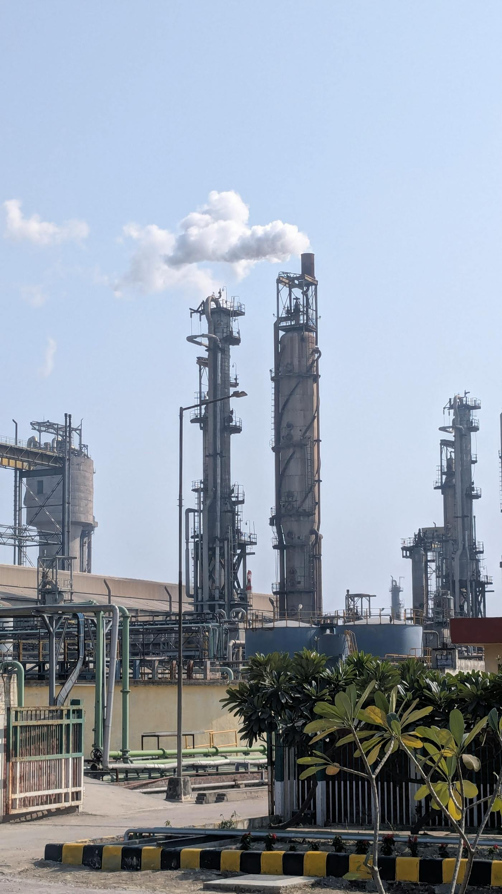
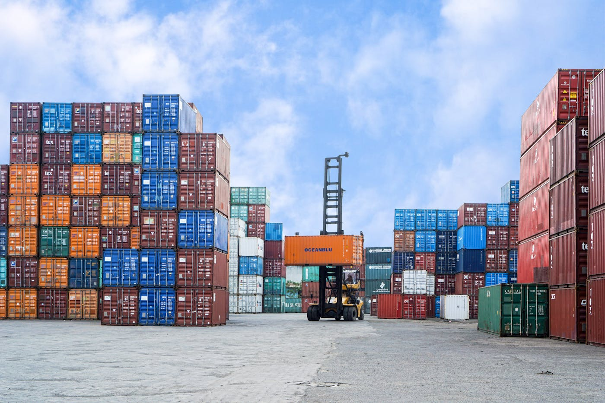

R&D
工艺研发与样品确认
支持路线评估、样品验证、规格确认和定制合成前期判断。
Company Profile
工厂直产直销，研发、生产、质量控制与外贸出口一体化。
俊杰成立于2016年8月12日，注册资本5000万元人民币，位于河南省许昌市建安区张潘镇精细化工园区，是一家集研发、生产、销售与外贸出口于一体的精细化工中间体企业。公司主营医药中间体助剂、农药中间体及化工辅料等产品，持续推进沙星类母核、抗菌类医药中间体及相关精细化工项目建设，具备从工艺开发、批量生产、质量控制到出口交付的综合服务能力。俊杰拥有多项行政许可，积极参与招投标项目，连续多年保持纳税人信用A级，并被认定为科技型中小企业，长期按规定完成企业年报报送。

Integrated Capability
围绕海外客户对中间体采购的核心需求，俊杰把技术确认、稳定生产、质量文件和外贸交付放在同一套项目流程中管理。

支持路线评估、样品验证、规格确认和定制合成前期判断。

对接库存、排产、批次、包装和交期，满足样品、小批量和吨级订单。

协同 COA、MSDS、标签、报关、订舱、包装照片和目的港文件要求。
Development
俊杰围绕医药中间体、农化中间体和相关精细化工产品持续推进项目建设，并通过许可、信用与年报体系保持规范经营。
注册资本5000万元人民币，进入精细化工中间体生产与销售领域。
新增医药中间体及相关精细化工建设项目，拓展产品和产能基础。
围绕抗菌类沙星医药中间体项目推进建设，强化规模化供应能力。
沙星类母核及其他医药中间体项目取得环评批复，持续完善产品平台。